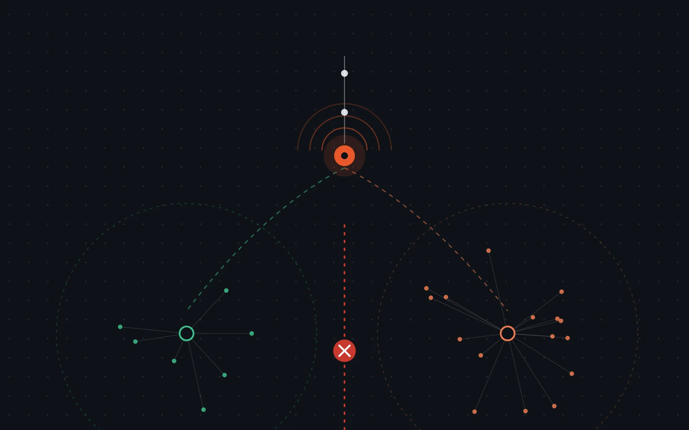

Deux Wi‑Fi pour un cabinet de kinésithérapie
Cas d’école ENSITECH : un kinésithérapeute demande un audit de son réseau. Il subit des coupures en fin de journée, son imprimante disparaît et ses patients utilisent le même Wi‑Fi que le cabinet. J’ai qualifié la demande, fait les mesures, conçu un réseau à deux VLAN, chiffré la solution, puis rédigé un compte rendu simple pour le client.
- Réseaux
- VLAN 10 · VLAN 20
- Matériel
- TP-Link Omada
- Schéma
- diagrams.net
- Devis
- 600 € HT

01 — La demandeCe que le client voit, et ce qui se passe vraiment
Le cabinet (inventé pour le cours) a une box fibre dans un placard, des murs en béton et un seul Wi‑Fi, dont le code est affiché en salle d’attente. Les bilans des patients sont scannés dans un dossier partagé du PC de l’accueil. Le budget est d’environ 1 000 € et l’intervention peut avoir lieu un samedi matin.
| Problème relevé | Type |
|---|---|
| Coupures entre 17 h et 19 h | Panne |
| L’imprimante disparaît du PC de l’accueil | Confort |
| Les patients ont le même Wi‑Fi que le cabinet | Sécurité |
| Bilans scannés sur un dossier partagé du PC de l’accueil | Sécurité |
Un bilan scanné est une donnée de santé, protégée par le RGPD (article 9). Comme le code Wi‑Fi est affiché en salle d’attente, n’importe quel téléphone de patient se retrouve sur le même réseau que ce dossier partagé.
02 — L’auditMesurer avant de proposer
Pour l’atelier, j’ai fait les mêmes mesures que chez un client, mais sur mon propre réseau : le partage de connexion de mon téléphone, depuis un Mac. On ne scanne jamais un réseau qui n’est pas le sien sans autorisation écrite.
Les commandes de l’audit (version Mac)ipconfig getpacket en0 # adresse, masque, passerelle, bail DHCP netstat -rn # la route par défaut ping -c 20 <passerelle> # la stabilité du lien traceroute 1.1.1.1 # les routeurs traversés (11 sauts relevés) nslookup www.ameli.fr # la résolution DNS nc -vz www.ameli.fr 443 # le port HTTPS répond-il ?
Ce que l’audit apprend pour le cabinet
- Les coupures du soir : quand la ligne est chargée, la latence augmente fortement. Entre 17 h et 19 h, les téléphones des patients occupent la connexion et le logiciel de dossiers patients finit par décrocher.
- L’imprimante qui disparaît : elle reçoit son adresse en DHCP pour une durée limitée (le bail). Quand le bail expire, l’adresse peut changer : il faut donc lui réserver une adresse fixe.
- Le Wi‑Fi des salles du fond : le 5 GHz traverse mal le béton. Il faut sortir le Wi‑Fi du placard en posant une borne au plafond du couloir, alimentée par le câble (PoE).
Le signal Wi‑Fi est excellent (−45 dBm) et internet répond (0 % de perte vers 1.1.1.1, port 443 d’ameli.fr ouvert). En revanche, on relève 10 % de perte vers la passerelle et une latence qui monte de 38 à 955 ms quand la ligne est chargée : c’est la connexion sollicitée qui pose problème, comme au cabinet entre 17 h et 19 h.
03 — La conceptionDeux réseaux sur le même matériel
Un routeur remplace la box pour le réseau interne, un switch alimente la borne Wi‑Fi par le câble (PoE) et deux VLAN séparent le cabinet des patients. La box SFR ne sert plus qu’à amener internet : elle est passée en DMZ vers le routeur.
| VLAN 10 · Cabinet | VLAN 20 · Patients | |
|---|---|---|
| Réseau | 192.168.10.0/24 | 192.168.20.0/24 |
| Passerelle | 192.168.10.1 | 192.168.20.1 |
| Plage DHCP | .100 à .199 | .100 à .199 |
| Wi‑Fi (SSID) | Kine-Cabinet | Kine-Patients |
| Peut joindre l’autre VLAN ? | Non (pas nécessaire) | Non |
L’imprimante (192.168.10.20) et le PC de l’accueil (192.168.10.10) ont une réservation DHCP ; le switch et la borne ont une adresse fixe.
04 — Le devis600 € HT pour un budget d’environ 1 000 €
J’ai choisi du matériel de la gamme TP-Link Omada, avec les prix du catalogue de l’exercice vérifiés chez un revendeur. J’ai écarté le switch non administrable, moins cher : il ne gère ni les VLAN ni le PoE.
| Désignation | Qté | Total HT |
|---|---|---|
| Routeur TP-Link ER605 | 1 | 65 € |
| Switch administrable PoE+ TP-Link TL-SG2210P | 1 | 105 € |
| Borne Wi‑Fi 6 TP-Link EAP650 | 1 | 110 € |
| Câble Cat6, 50 m | 2 | 70 € |
| Main-d’œuvre : pose, réglage, tests | 4 h | 220 € |
| Déplacement | 1 | 30 € |
| Total à payer (TVA non applicable, art. 293 B du CGI) | 600 € |
Avec la marge restante, je propose une option plutôt que de tout dépenser : une deuxième borne pour les salles du fond (215 €), car le béton risque d’affaiblir le Wi‑Fi.
05 — Le compte renduÉcrire pour quelqu’un qui n’est pas du métier
Le client est kinésithérapeute : il veut savoir ce qui change pour lui, pas comment fonctionne un VLAN. Extrait du compte rendu d’intervention :
Bonjour Monsieur Marchal,
Vous avez désormais deux Wi‑Fi :
– Kine-Cabinet, réservé à vous et à votre équipe. Ne donnez pas son code aux patients.
– Kine-Patients, pour les patients. Vous pouvez afficher ce code en salle d’attente : les patients auront internet, mais ne pourront voir ni vos ordinateurs, ni l’imprimante, ni vos dossiers.
Si l’imprimante ne répond plus, la secrétaire éteint l’imprimante, attend 30 secondes, la rallume et patiente 2 minutes. Il n’est plus nécessaire de la réinstaller. Si le problème continue, elle peut m’appeler.
06 — CompétencesBloc 1 du BTS SIO
| Compétence | Où dans la mission |
|---|---|
| Gérer le patrimoine informatique | Inventaire des équipements, plan d’adressage, choix du matériel |
| Répondre aux incidents et aux demandes d’assistance et d’évolution | Coupures du soir, imprimante qui disparaît, qualification de la demande |
| Travailler en mode projet | Étapes, livrables, devis, créneau d’intervention du samedi |
| Mettre à disposition des utilisateurs un service informatique | Wi‑Fi patients séparé, compte rendu écrit pour l’utilisateur |